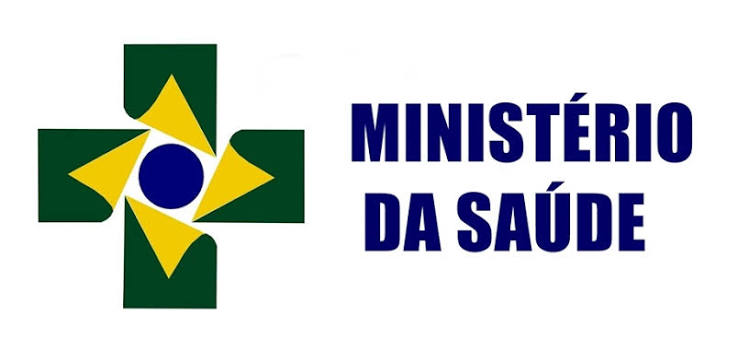
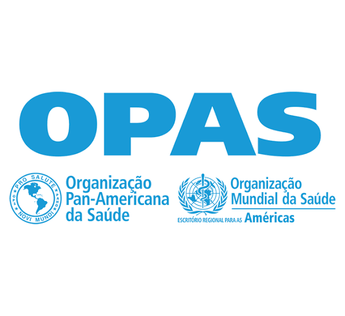

INCA
Instituto Nacional de Câncer. Encontre informações sobre câncer de mama, prevenção e diagnóstico.
Acessar site →Buscar informações em fontes confiáveis é fundamental para compreender melhor o câncer de mama e conhecer as orientações sobre prevenção, diagnóstico e tratamento.
Instituto Nacional de Câncer. Encontre informações sobre câncer de mama, prevenção e diagnóstico.
Acessar site →
Consulte orientações oficiais sobre saúde, campanhas e cuidados com o câncer de mama.
Acessar site →
Acesse conteúdos e materiais informativos relacionados à saúde e à prevenção de doenças.
Acessar site →Sempre procure informações em fontes oficiais e profissionais qualificados. Em caso de dúvidas ou alterações nas mamas, procure uma unidade de saúde.